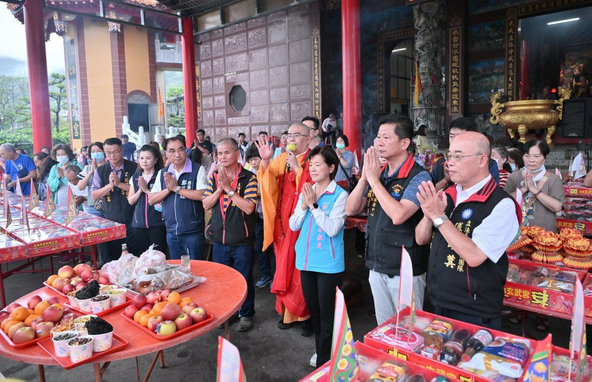

吉安宮廟中元普渡 物資化為弱勢暖流

可樂電子報小編/編輯
逢七月孝親感恩月與中元節，吉安鄉公所感謝在地宮廟號召善信大德響應公益，將宗教信仰中的慈悲與善念化為實際行動，與公部門攜手關懷弱勢家戶。日前太昌玄武宮、驪山老母總廟慈雲宮分別捐贈普渡物資一批，將透過物資捐贈平台彙整資源後，轉贈給轄區內有需要的鄉親。游淑貞鄉長親往致贈感謝狀，代表受惠鄉民表達誠摯謝意，也肯定宮廟凝聚信眾善心，串聯信仰與公益，成為支持鄉親度過生活難關的重要力量，充分展現公私協力、社會互助共好的溫暖精神。

太昌玄武宮秉持「取之於社會、用之於社會」的理念，長期關心地方公益及社會弱勢，透過各項宗教活動祈求地方平安、民眾安康，也積極將信仰中的慈悲精神落實於社會關懷。此次配合中元普度法會，捐贈綜合物資21份，希望能讓更多家庭感受到來自社會各界的關心與支持。主委張福壽表示，宗教不僅是心靈寄託，更能成為凝聚地方力量、回饋社會的重要平台，希望透過持續參與公益，將善念傳遞給更多需要幫助的人。

驪山老母總廟慈雲宮今年捐贈36份普渡物資給吉安鄉公所統一規劃與發放，包含各類米糧及日常食品，都是民生日常所需。慈雲宮宮主葉美玉指出，宮廟秉持主祀無極驪山老母慈悲庇護鄉境平安的精神，發願捐贈普渡物資關懷弱勢。普渡祭典除了虔誠祈福，若能將祭品轉化為「有形」的物資關懷，實質幫助生活較為匱乏的民眾，更能讓信眾的善心發揮最大效益。近20年來，慈雲宮關懷地方、回饋鄉里的信念始終一脈相承、從未間斷，展現民間信仰凝聚社會善意、發揮溫馨大愛的深刻力量。

游淑貞鄉長表示，中元節不只是慎終追遠、普度眾生的重要傳統節日，更是凝聚社會善念、傳遞人情溫度的時刻。鄉公所將持續整合各界捐贈資源，透過物資捐贈平台妥善分配，讓每一份愛心送到真正需要的家庭手中，並期盼更多民間團體共同響應公益，持續透過公私協力，攜手建立溫暖、友善且充滿互助精神的吉安鄉。